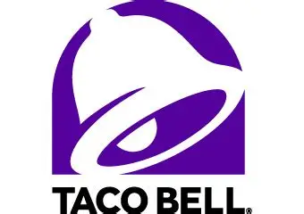

ACCOUNT SUMMARY
AVAILABLE BALANCE
£0.00
| Account Holder: | Not signed in |
| Account Type: | Standard Checking |
| Status: | ACTIVE |

Reliable Banking for the StateCraft Economy
A simple StateCraft banking service for storing, tracking, and withdrawing your in-game funds.
Serving the community with dependable online banking.
AVAILABLE BALANCE
| Account Holder: | Not signed in |
| Account Type: | Standard Checking |
| Status: | ACTIVE |
Send money in-game to the Taco Bank account.
Deposits will appear after they are confirmed by the bank system.
Taco Bank provides simple account access from any modern web browser.
Account Information >>Make deposits using the in-game payment system and manage your balance here.
Deposit Instructions >>Built for players who want a straightforward place to manage StateCraft funds.
Learn More >>